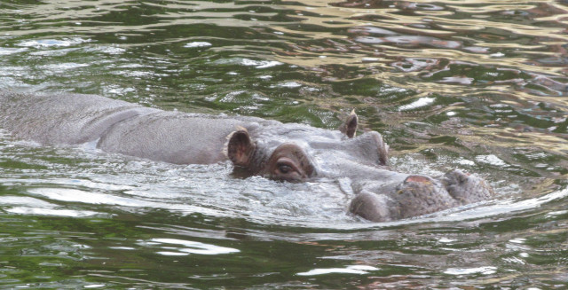

Hipopotam

hipopotam,ssak z rzędu parzystokopytnych, współczesny przedstawiciel rodziny hipopotamowatych; występuje w Afryce na południe od Sahary
CIEKAWOSTKI
Istnieją dwa gatunki hipopotamów na świecie: hipopotam pospolity i hipopotam pigmejski. Oba są ssakami żyjącymi w Afryce, a każdy z nich jest członkiem rodziny hipopotamów. Poznajcie ciekawe informacje oraz ciekawostki o hipopotamach.
1. Hipopotamy żyją w Afryce Subsaharyjskiej. Żyją na obszarach z dużą ilością wody, ponieważ większość czasu spędzają pod wodą, aby utrzymać zimną i wilgotną skórę.
2. Mimo że hipopotamy przebywają w wodzie przez dużą część życia, nie potrafią pływać. Chodzą lub stoją na powierzchniach pod wodą. Hipopotamy spędzają dzień w wodzie, aby chronić swoją skórę przed słońcem.
3. Chociaż hipopotamy mogą wstrzymać oddech przez około siedem minut, większość dorosłych hipopotamów wraca do oddychania co trzy do pięciu minut, aby oddychać. Jest to proces automatyczny – nawet hipopotamy śpiące mogą tak oddychać bez budzenia się.
4. Wydzielają tłustą, czerwoną substancję, która działa jak nawilżacz, blokada przeciwsłoneczna i chroni je przed zarazkami.
5. Hipopotamy mogą zamknąć nozdrza i uszy, aby zapobiec przedostawaniu się wody. Dlatego też cielęta hipopotamów mogą ssać na lądzie lub pod wodą.
6. Nazwa Hipopotam pochodzi od starożytnego greckiego „konia rzecznego”.
7. Pomimo swojego krępego kształtu i krótkich nóg, może z łatwością prześcignąć większość ludzi. Hipopotamy biegają z prędkością 30 km/h na krótkich dystansach.
8. Hipopotamy są zwierzętami społecznymi, przebywającymi w grupach składających się zazwyczaj z 10 do 30 członków, w tym zarówno samic, jak i samców, choć niektóre grupy liczą aż 200 osobników. Bez względu na wielkość, grupą kieruje zazwyczaj dominujący samiec.
9. Otwarte paszcze mogą być błędnie odebrane jako ziewnięcie. Hipopotam otwierając paszcze oznacza swoje terytorium i ostrzega innych przed wtargnięciem na jego teren.
10. Hipopotam żyje do 40 lat.
11. Ze względu na swoje duże rozmiary, hipopotam jest trzecim co do wielkości ssakiem lądowym zaraz po słoniu i nosorożcu białym.
12. Hipopotamy będą podróżować na lądzie do 10 km w ciągu dnia w celu znalezienia jedzenia. Wypasają się od czterech do pięciu godzin i mogą zjeść 68 kg trawy każdej nocy. Biorąc pod uwagę ich ogromne rozmiary, spożycie pokarmu przez hipopotamy jest stosunkowo niskie.
13. Rdzenny zasięg wczesnych hipopotamów rozszerzył się na całą Afrykę, Bliski Wschód i Europę. Skamieniałości hipopotamów pojawiły się nawet daleko na północy, w Anglii.
14. Hipopotam jest jednym z najbardziej agresywnych stworzeń na świecie i jest często uważany za jedno z najbardziej niebezpiecznych zwierząt w Afryce. Jeśli jednak jest zagrożony na lądzie, często biegnie do wody.
15. Chociaż od dawna uważa się, że hipopotamy są wyłącznie roślinożerne, badanie z 2015 roku wykazało, że hipopotamy od czasu do czasu żerują na tuszach innych zwierząt, w tym innych hipopotamów.
16. W 2008 roku IUCN sklasyfikowała hipopotama jako znajdującego się w trudnej sytuacji. Liczba osobników spada, najmocniej w Demokratycznej Republice Konga.
17. Hipopotamy to bardzo głośne zwierzęta. Ich krzyki i sapanie mają głośność nawet 115 decybeli.
18. Zmiany klimatyczne i ekspansja człowieka na terenie całej Eurazji ograniczyły ilość miejsc, do których mogły dotrzeć hipopotamy, a dziś żyją one tylko w Afryce.
19. Hipopotamy są znane jako krewni świń, ale ostatnie badania pokazują, że ich najbliższym krewnym byłyby walenie – wieloryby i delfiny.
20. Hipopotamy rodzą się w wodzie.